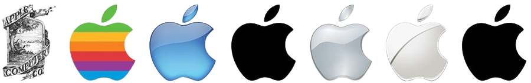
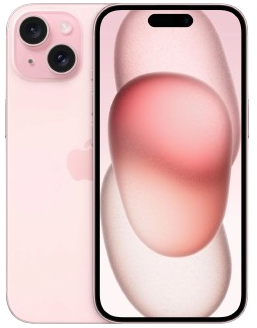

iPhone

iPhone History
The iPhone is a line of smartphones designed and marketed by Apple Inc.,
first introduced by Steve Jobs on January 9, 2007.
It revolutionized
the mobile phone industry by combining a phone, an iPod, and an
internet communicator into a single
touch-screen device. Known
for its sleek design, intuitive user interface, and seamless
integration with Apple’s ecosystem,
the iPhone has consistently
set trends in smartphone technology, including features like the
App Store, Face ID, advanced
cameras, and powerful processors.
Over the years, Apple has released numerous iPhone models, each
improving on
performance, photography, battery life, and connectivity.
The iPhone remains one of the best-selling and most
influential
consumer electronics products in history, playing a central role in
modern communication and mobile computing.

The First iPhone
The first iPhone was introduced by Apple Inc. on January 9, 2007,
and
released on June 29, 2007. It revolutionized the mobile phone industry
by combining a mobile phone,
an iPod, and an internet communicator
into one device with a multi-touch screen interface—eliminating the
need for physical keyboards or styluses. The original iPhone featured
a 3.5-inch display, a 2-megapixel camera,
up to 16 GB of storage, and
ran on a custom version of Mac OS X (later known as iOS). It lacked
features like
3G connectivity and third-party apps at launch but set
the foundation for modern smartphones, leading to massive
industry
changes and the eventual rise of the App Store in 2008.

The iPhone 16 series introduces several standout features that
set it apart from previous models.
One of the key improvements
is its advanced camera system, with enhanced low-light performance,
better zoom capabilities, and an upgraded sensor for clearer and more
vibrant photos. The new A18
chip boosts performance, making apps run
faster and improving overall efficiency. The iPhone 16 Pro
and Pro Max
models now feature an even smoother 120Hz ProMotion display, offering
a more fluid
experience while scrolling and gaming. Additionally, the
Pro models come with a more powerful battery,
providing longer usage
times compared to older versions. With these updates, the iPhone 16
series delivers
a significant leap in both design and functionality.


iPhone 16e
The iPhone 16e is the latest addition to Apple's iPhone E series,
offering an exciting combination of affordability
and powerful
features. This new model is equipped with the A18 chip, ensuring
smooth performance for everyday tasks,
gaming, and app usage.
The iPhone 16e features a 6.1-inch Liquid Retina display, offering
crisp visuals and vibrant colors.
While it doesn't have the advanced
ProMotion display or telephoto lenses found in the Pro models, the camera
system still
delivers great results with enhanced low-light performance.
The iPhone 16e offers an excellent balance of performance and price,
making it a great choice for users who want the latest features without
breaking the bank.

Compare iPhone 13 to 16

iPhone 13

iPhone 14

iPhone 15